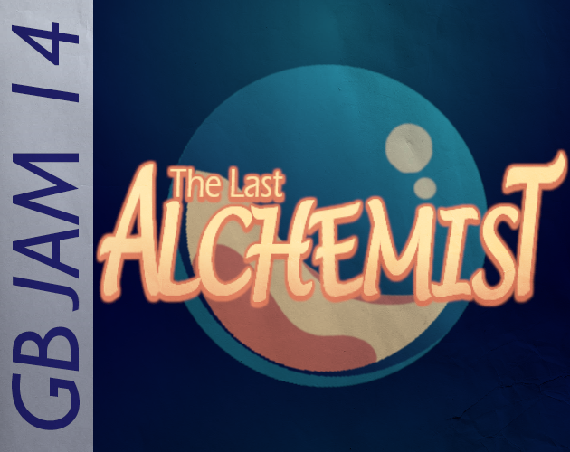

← All Projects
Shipped
Godot · GDScript
The Last Alchemist
A Game Boy puzzle game built in 10 days for GBJAM 14. I was the sole programmer, working with two artists who made all of the art.

Overview
The Last Alchemist is a puzzle game made in Godot for GBJAM 14, a 10-day game jam built around the original Game Boy. It runs at the handheld's native 160×144 resolution and plays in the browser on itch.io.
I was the only programmer on the team, working with two artists who created all of the art.
My Contributions
- Implemented every mechanic, puzzle, and level in the game.
- Wrote all of the in-game text.
- Shaped the high-level design with the team: it was a group effort, and about 80% of the ideas were mine.
- Built the game to the jam's Game Boy constraints, at 160×144 in an HTML5 web build.
Scope
Ten days meant cutting: the jam build covers less than the full design we planned. Post-jam polish is in progress.